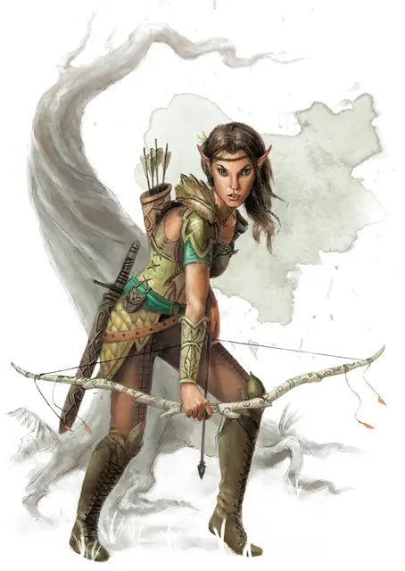

Разведчик
Scout
Средний или Маленький Гуманоид, Нейтральный

Класс Защиты 13 Инициатива +2 (12)
Хиты 16 (3к8 + 3)
Скорость 30 футов
| мод | спас | ||
|---|---|---|---|
| СИЛ | 11 | +0 | +0 |
| ЛОВ | 14 | +2 | +2 |
| ТЕЛ | 12 | +1 | +1 |
| мод | спас | ||
|---|---|---|---|
| ИНТ | 11 | +0 | +0 |
| МДР | 13 | +1 | +1 |
| ХАР | 11 | +0 | +0 |
Чувства пассивное Восприятие 15
Языки Общий плюс ещё один Любой язык
Опасность 1/2 (100 опыта; БВ +2)
Действия
Мультиатака. Разведчик совершает две атаки, используя Короткий меч и Длинный лук в любой комбинации.
Короткий меч. Бросок рукопашной атаки: +4, досягаемость 5 фт. Попадание: 5 (1к6 + 2) Колющего урона.
Длинный лук. Бросок дальнобойной атаки: +4, дистанция 150/600 фт. Попадание: 6 (1к8 + 2) Колющего урона.
Бонус мастерства +2
Среда обитания Любая
Сокровища Личные, Инструментальные
Разведчики
Дозорные и странники
Разведчики — это воители диких земель, обученные охоте и выслеживанию. Они могут быть первопроходцами или звероловами, а могут исполнять и более ратные роли: метких лучников, охотников за головами либо конных дозорных.
Разведчики — зоркие стрелки, остро чувствующие всё, что творится вокруг. Зачастую они досконально знают ландшафт нескольких краёв, равно как и местных существ, приметные ориентиры и подстерегающие путников опасности.